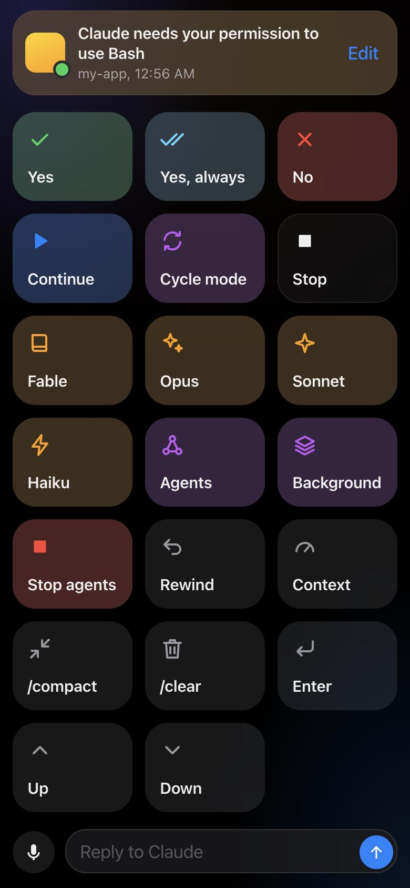

Plug it into your Mac. Tap Yes, No or Switch to Opus, send work to the background, or just talk. It glows and buzzes when Claude needs you.

23 seconds: a permission prompt, a tap, a model switch, and the install.
After that, plugging the phone in is all it takes.
One Python file. No packages, no account, no API key.
Turn on USB debugging once. The pad opens on the phone by itself.
Every tap becomes keystrokes in the terminal where Claude Code runs.
macOS, Python 3.9 or later, Claude Code, and an Android phone with a cable.
# the tool that talks to the phone over USB brew install --cask android-platform-tools git clone https://github.com/thebharathkumar/Deckpad.git cd Deckpad python3 server.py --setup # lets Claude tell the phone when it needs you python3 server.py
On the phone: Settings → About phone → tap Build number seven times, then turn on USB debugging in Developer options. Plug in and tap Allow. Full guide
Everything you need at arm's length, and nothing you don't.
Yes, Yes always, No, Continue, Stop. Big targets you can hit without looking.
Fable, Opus, Sonnet and Haiku, plus background tasks, agents and rewind.
Dictate a reply with the phone's own speech recognition, then send.
Add keys, change what they type, pick colors and symbols, all from the phone.
Deckpad has no server and no accounts. It runs on your Mac and talks to your phone, over the cable by default. It never sees your code or your Claude account, and it can't run commands: it can only press the keys you've set up. A random pairing token, localhost-only mode and lockouts after wrong attempts keep anyone else off your keyboard.